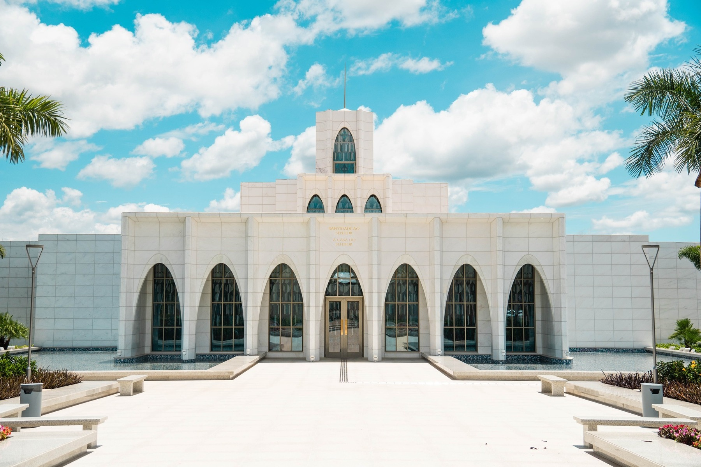

Álbum do Templo
☰
Página Inicial
Antigo
Novo
Grande
Pequeno
Templos
Templo de Salt Lake
Templo de Roma

Templo de Brasília
Templo de São Paulo
Templo de Lisboa
Templo de Washington D.C.
Templo de Paris
Templo de Curitiba
Templo de Recife
 Templo de Roma
Templo de Roma